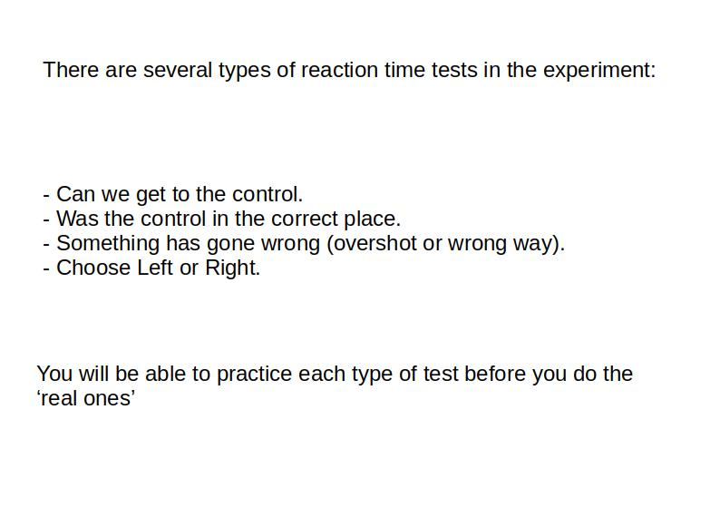

<!DOCTYPE html>
<html><head>
<meta http-equiv="content-type" content="text/html; charset=UTF-8">
    <title>Orienteering</title>
    <script src="./js/jquery.min.js"></script>
    <script src="./js/jspsych.js"></script>
    <script src="./js/plugins/jspsych-html-keyboard-response.js"></script>
    <script src="./js/plugins/jspsych-external-html.js"></script>
    <script src="./js/plugins/jspsych-instructions.js"></script>
    <script src="./js/plugins/jspsych-image-keyboard-response.js"></script>
    <link href="./js/css/jspsych.css" rel="stylesheet" type="text/css"></link>
  </head>
  <body></body>
  <script>
    
    
// #################  create timelines & other variables  #################

var timeline = [];  // Create the variable but not run it!


// #################  create Briefing screens  #################

    var instructions = {
        type: 'instructions',
        pages: [
            '</img>'],
        show_clickable_nav: true
    };
    timeline.push(instructions);

// #################  create 'Can We?' demo screens  #################

// Fixation
    var CWdemo = {
        type: 'image-keyboard-response',
        stimulus: './img/CW-1-y-start.jpg',
        trial_duration: 2000,
        choices: jsPsych.NO_KEYS
    };
    timeline.push(CWdemo);
// Map
    CWdemo = {
        type: 'image-keyboard-response',
        stimulus: './img/CW-1-y-map.jpg',
        trial_duration: 500,
        choices: jsPsych.NO_KEYS
    };
    timeline.push(CWdemo);
// Picture
    CWdemo = {
        type: 'image-keyboard-response',
        stimulus: './img/CW-1-y-pic.jpg',
        choices: ['Y', 'N'],
        prompt: "<p>If you can get to the control, press 'Y'. If you can't, press 'N'",
        response_ends_trial: true
    };
    timeline.push(CWdemo);


 // #################  run the second timeline  #################

    jsPsych.init ({
        timeline: timeline,  // Oooh yes, now we execute the time line for the experiment
        preload_images: images,
        on_finish: function() { endExperiment( 
            jsPsych.data.get().csv(), 
            function() {document.write('All done!<br>its possible.</br>')}
                )
            }
        });

    // The endExperiment function called on completion of the timeline

    function endExperiment(dataset,callback) {
        $.post('submit',{"content": dataset});
        setTimeout(callback,1000)
    }  
    // Posts the dataset into a location where it can be found by the app engine

	  /* image list */
	  var images = [
		  './img/intro1.jpg',
		  './img/intro2.jpg',
		  './img/intro3.jpg',
		  './img/intro4.jpg',
		  './img/intro5.jpg',
		  './img/briefing1.jpg',
		  './img/briefing2.jpg',
		  './img/briefing3.jpg',
		  './img/briefing4.jpg',
		  './img/map1yCWall.jpg',
		  './img/map1yCWcut.jpg',
		  './img/map1yCWcut.jpg'
        ];

        
//// generate a random subject ID with 15 characters
//var subject_id = jsPsych.randomization.randomID(15);

//// pick a random condition for the subject at the start of the experiment
//var condition_assignment = jsPsych.randomization.sampleWithoutReplacement(['conditionA', 'conditionB', 'conditionC'], 1)[0];


//// record the condition assignment in the jsPsych data
//// this adds a property called 'subject' and a property called 'condition' to every trial
//    jsPsych.data.addProperties({
//    subject: subject_id,
//    condition: condition_assignment
//    });


   </script>
</html>
